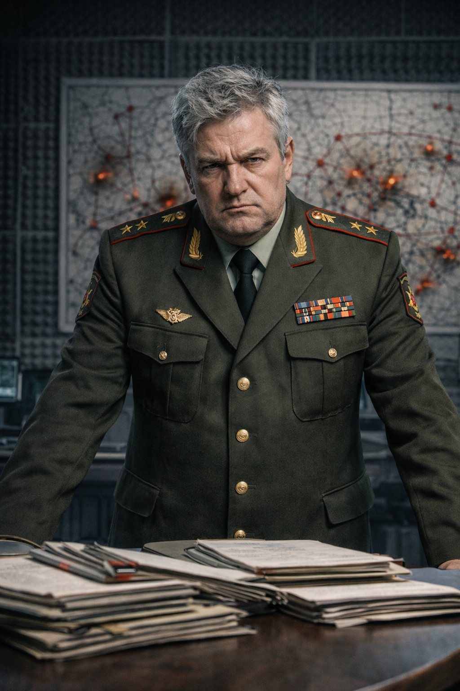

×

Полковник Беловец
- Полное имя: Владимир Евгеньевич Беловец
- Вид: Человек
- Пол: Мужской
- Возраст: 45 лет
- Статус: Жив
- Звание: Полковник
- Отношения: Надежда (жена)
- Первое появление: Глава 28
На данном сайте содержится информацию о произведении "От предвечной Тьмы к лунному Свету". Среди этой информации имеется большое количество сюжетных спойлеров.
«Либо ты работаешь, либо я сейчас решаю проблему окончательно».
— Полковник Беловец в разговоре с Митрофаном.
Владимир (Володя) Беловец — высокопоставленный офицер, полковник, принимающий активное участие в деятельности оперативного штаба по поимке Чайного Мстителя. Он представляет собой тип жесткого и прагматичного силовика, готового на крайние меры ради выполнения поставленной задачи.
Полковник Беловец — суровый, седоватый мужчина, чья жизнь подчинена строгой дисциплине и иерархии. Он обладает скептическим складом ума и изначально крайне негативно относится к привлечению к следствию экстрасенсов и магов, называя их «шарлатанами». Однако, когда ситуация заходит в тупик из-за ментальных атак Мстителя, он проявляет готовность использовать любые, даже сверхъестественные методы, если они приносят результат.
Ему свойственна хладнокровная жестокость: он способен совершить убийство безоружного человека в «будничном» стиле, если тот отказывается подчиняться. В личной жизни он описывается как человек, привыкший принимать заботу как должное, не проявляя благодарности.
Двадцать лет назад, будучи «лейтенантом-романтиком», Владимир обратился за помощью к деревенскому колдуну Митрофану. Ему нужно было приворожить женщину по имени Надя, которая его не замечала. Ритуал сработал, и Надежда стала его женой, хотя сам полковник за все последующие годы ни разу не поблагодарил её за созданный уют.
В рамках работы штаба по поимке Мстителя полковник курирует технические и оперативные аспекты следствия. Столкнувшись с тем, что Мститель способен проникать в сознание аналитиков штаба, Беловец вспоминает о своём опыте с Митрофаном и приказывает доставить старика в штаб, надеясь использовать его как «антимагическое оружие».
Когда Митрофана доставляют в штаб, полковник требует, чтобы тот нашел преступника любыми средствами. Митрофан, заметив, что Владимир разучился просить и превратился в тирана, отказывается сотрудничать. В ответ на это Беловец убивает колдуна выстрелом в упор, после чего приказывает убрать тело, «как будто его здесь не было».
Владимир женат на Надежде более двадцати лет. Его брак был основан на магическом вмешательстве, о чем его жена, вероятно, не знала. После убийства Митрофана полковник сталкивается с внезапным холодным отчуждением со стороны супруги: она перестаёт разбавлять ему чай и открыто упрекает в отсутствии элементарной благодарности. В этот момент Беловец впервые за долгое время ощущает не злость, а пустоту.